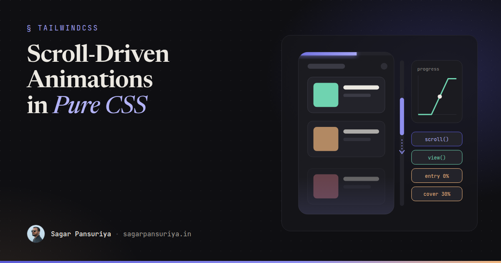
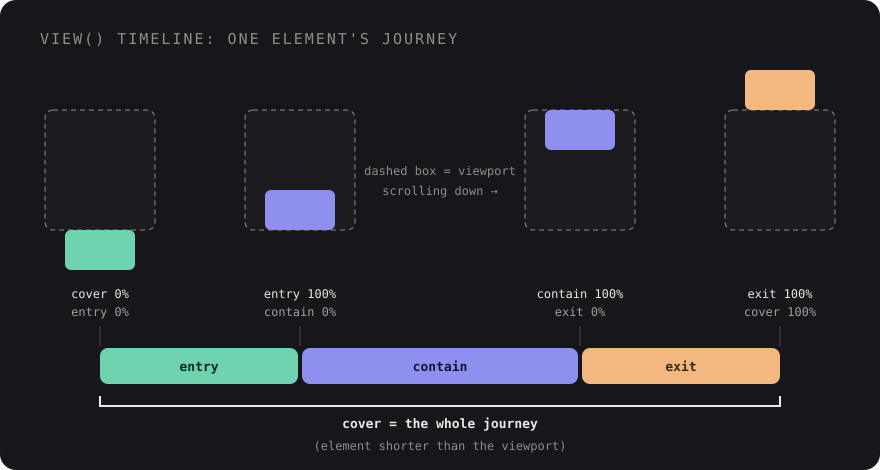

Scroll-Driven Animations in Pure CSS: Progress Bars, Reveals and Parallax


You've probably written this code more than once: a scroll listener that reads
scrollTop, does some maths, and sets a width or a transform on every event. Maybe
it's a reading progress bar, maybe an IntersectionObserver that adds a
.is-visible class so cards fade in. It works, but it runs on the main thread,
competes with everything else your page is doing, and needs care to avoid jank.
CSS can now do most of this on its own. Scroll-driven animations let you attach a normal
@keyframes animation to scroll position instead of time. No listeners, no
observers, no library. It belongs on the same list as the features in my post on
modern CSS replacing JavaScript, and it
deserves a walkthrough of its own.
This post covers the two timeline types, how animation-range works, three
patterns you'll actually use, and how to ship them responsibly with reduced motion, fallbacks
and Tailwind.
The core idea: swap time for scroll
A regular CSS animation progresses from 0% to 100% over its duration. A scroll-driven animation uses the same keyframes, but progress comes from a timeline linked to scrolling. You opt in with one property:
.thing {
animation: fade-in linear both;
animation-timeline: scroll(); /* or view() */
}Two details matter immediately. First, linear easing usually feels best, because
the user's scroll is already the "easing". Second, declare
animation-timeline after the animation shorthand. The
shorthand resets animation-timeline to its default, so if the order is reversed,
your animation quietly falls back to a time-based one.
There are two kinds of timeline, and picking the right one is most of the work.
scroll(): progress of a scroll container
scroll() tracks how far a scroll container has been scrolled, from the top (0%)
to the bottom (100%). By default it uses the nearest ancestor scroll container on the block
axis. You can be explicit: scroll(root) for the document,
scroll(nearest inline) for a horizontal scroller.
view(): an element's journey through the viewport
view() tracks a single element as it moves through its scroll container's
visible area. Progress starts when the element's leading edge enters the scrollport and ends
when its trailing edge leaves. This is the one you want for reveals, because each element gets
its own timeline.
animation-range: which slice of the timeline
By default the animation runs across the whole timeline. For a view() timeline
that means the full journey from entering to leaving, which is rarely what you want for a
reveal. animation-range lets you pick a slice using named ranges:

cover: the full journey, first pixel in to last pixel out.entry: while the element is entering, from touching the bottom edge to fully inside.contain: while it's fully visible (or fully covering the viewport, if it's taller than it).exit: while it's leaving through the top edge.
You combine a range name with a percentage for the start and end:
animation-range: entry 0% cover 30% means "start as the element begins to enter,
finish when it's 30% of the way through its whole journey". For scroll()
timelines you can use plain lengths instead, like animation-range: 0 200px to run
over the first 200 pixels of scrolling.
Pattern 1: a reading progress bar
The classic. A fixed bar at the top of the page that grows as you read:
.reading-progress {
position: fixed;
inset: 0 0 auto 0;
height: 4px;
background: var(--color-accent);
transform-origin: 0 50%;
animation: grow-x linear both;
animation-timeline: scroll(root block);
}
@keyframes grow-x {
from { transform: scaleX(0); }
to { transform: scaleX(1); }
}Note scaleX rather than animating width. Transforms and opacity are
compositor-friendly, which is where the performance win comes from (more on that below).
Pattern 2: reveal on scroll
This replaces the IntersectionObserver plus class toggle that most sites carry
around:
@keyframes reveal {
from { opacity: 0; translate: 0 2rem; }
to { opacity: 1; translate: 0 0; }
}
.reveal {
animation: reveal linear both;
animation-timeline: view();
animation-range: entry 0% cover 30%;
}Every .reveal element gets its own timeline, so a grid of cards animates
naturally as each one scrolls in. Scroll back up and the animation reverses, because progress
follows position. If you want a one-way "appear once" effect, that's still a job for a bit of
JavaScript.
Pattern 3: parallax and shrinking headers
Parallax is just an element moving at a different rate from the scroll. With a
view() timeline over the cover range, a hero image can drift while its
section passes through:
.hero-media {
animation: drift linear both;
animation-timeline: view();
animation-range: cover;
}
@keyframes drift {
from { translate: 0 -10%; }
to { translate: 0 10%; }
}A compact sticky header is a scroll() timeline with a length range, so it
finishes shrinking after the first 160 pixels:
.site-header {
position: sticky;
top: 0;
animation: compact linear both;
animation-timeline: scroll(root);
animation-range: 0 160px;
}
@keyframes compact {
to { padding-block: 0.5rem; box-shadow: 0 1px 0 rgb(0 0 0 / 0.1); }
}Padding isn't a compositor-only property, so this one does trigger layout while it runs. For
a header that's usually fine. For big elements, prefer transform.
Named timelines for components
Sometimes the thing that animates isn't inside the thing that scrolls, like a progress indicator for a horizontal carousel. Give the scroller a named timeline and reference it:
.carousel { overflow-x: auto; scroll-timeline: --carousel inline; }
.carousel-progress { animation: grow-x linear both; animation-timeline: --carousel; }
/* If the indicator is a sibling, not a descendant, lift the name to a shared ancestor */
.carousel-wrapper { timeline-scope: --carousel; }Why this performs better
A scroll listener runs JavaScript on the main thread, which is also where your framework, third-party scripts and event handlers run. When that thread is busy, scroll effects stutter.
Scroll-driven animations are declarative. The browser knows the relationship between scroll
position and animation progress up front, so when you animate compositor-friendly properties
like transform and opacity, it can update them off the main thread,
in step with scrolling. You also delete code: no listeners to throttle, no observers to
disconnect, nothing competing with your interactions.
Respect reduced motion
Scroll-linked motion is exactly the kind of effect that makes some people feel unwell, especially parallax. Wrap motion-heavy animations in a reduced-motion check. I prefer the opt-in form, so the motion only exists for people who haven't asked to reduce it:
@media (prefers-reduced-motion: no-preference) {
.hero-media {
animation: drift linear both;
animation-timeline: view();
animation-range: cover;
}
}A progress bar is fine to keep for everyone, since it communicates information rather than decoration. Parallax and big translations should go.
Browser support and progressive enhancement
Chromium-based browsers have supported scroll-driven animations since version 115, and Safari added them in Safari 26. Firefox has had an implementation behind a flag for a long time, so check MDN or caniuse for the current status before you rely on it.
The failure mode is the important part. A browser that doesn't understand
animation-timeline ignores that line, but still sees the animation
shorthand and runs it as a time-based animation, which can mean a flash of movement on load.
For reveals, it's worse if you ever set a hidden starting state outside the animation. Guard
everything with @supports:
@supports (animation-timeline: view()) {
@media (prefers-reduced-motion: no-preference) {
.reveal {
animation: reveal linear both;
animation-timeline: view();
animation-range: entry 0% cover 30%;
}
}
}Unsupported browsers get fully visible, static content. That's the right default: the effect is an enhancement, never a requirement for reading the page.
One more gotcha: scroll() looks for the nearest scroll container, and
overflow: hidden on a wrapper creates one. If a timeline "does nothing", check for
an ancestor with hidden overflow. overflow: clip clips without creating a scroll
container.
Using them from Tailwind
At the time of writing, Tailwind doesn't ship dedicated scroll-timeline utilities, but it doesn't need to. For a one-off, arbitrary properties work, with underscores standing in for spaces:
<div class="[animation-timeline:view()] [animation-range:entry_0%_cover_30%]">…</div>Be careful combining those with an animate-* utility, though. Which rule wins is
decided by the order in the generated CSS, not the order of your classes, and the
animation shorthand resets the timeline. For anything you reuse, I'd define a
single custom utility in Tailwind v4 that sets everything in the right order:
/* resources/css/app.css */
@import "tailwindcss";
@keyframes reveal {
from { opacity: 0; translate: 0 2rem; }
to { opacity: 1; translate: 0 0; }
}
@utility scroll-reveal {
animation: reveal linear both;
animation-timeline: view();
animation-range: entry 0% cover 30%;
}Then compose it with Tailwind's variants, which handle both guards for you:
<article class="motion-safe:supports-[animation-timeline:view()]:scroll-reveal">
…
</article>If you already use the View Transitions API from my post on view transitions for multi-page sites, the two pair well: view transitions for moving between pages, scroll-driven animations for motion within one.
A checklist before you ship
- Use
view()for per-element effects,scroll()for page or container progress. - Declare
animation-timelineafter theanimationshorthand. - Use
lineareasing andbothfill mode. - Animate
transformandopacitywhere you can. - Wrap decorative motion in
prefers-reduced-motion: no-preference. - Guard with
@supports (animation-timeline: view())so unsupported browsers get static, visible content. - If nothing happens, look for an ancestor with
overflow: hidden. - In Tailwind, wrap reusable effects in one
@utilityinstead of stacking arbitrary properties onanimate-*.
Start with the progress bar. It's ten lines of CSS, it removes a scroll listener, and it shows you in five minutes how this model thinks. The reveals and parallax follow naturally from there.
Discussion